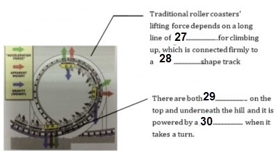

Part 1
READING PASSAGE 1
You should spend about 20 minutes on Questions 1-13 , which are based on Reading Passage 1 below.

Copy your neighbor
A
THERE’S no animal that symbolises rainforest diversity quite as spectacularly as the tropical butterfly. Anyone lucky enough to see these creatures flitting between patches of sunlight cannot fail to be impressed by the variety of their patterns. But why do they display such colourful exuberance? Until recently, this was almost as pertinent a question as it had been when the 19th-century naturalists, armed only with butterfly nets and insatiable curiosity, battle through the rainforests. These early explorers soon realised that although some of the butterflies’ bright colours are there to attract a mate, others are warning signals. They send out a message to any predators: “Keep off, we’re poisonous.” And because wearing certain patterns affords protection, other species copy them. Biologists use the term “mimicry rings” for these clusters of impostors and their evolutionary idol.
B
But here’s the conundrum. “Classical mimicry theory says that only a single ring should be found in any one area,” explains George Beccaloni of the Natural History Museum, London. The idea is that in each locality there should be just the one pattern that best protects its wearers. Predators would quickly learn to avoid it and eventually, all mimetic species in a region should converge upon it. “The fact that this is patently not the case has been one of the major problems in mimicry research,” says Beccaloni. In pursuit of a solution to the mystery of mimetic exuberance, Beccaloni set off for one of the mega centres for butterfly diversity, the point where the western edge of the Amazon basin meets the foothills of the Andes in Ecuador. “It’s exceptionally rich, but comparatively well collected, so I pretty much knew what was there, says Beccaloni.” The trick was to work out how all the butterflies were organised and how this related to mimicry.
C
Working at the Jatun Sacha Biological Research Station on the banks of the Rio Napo, Beccaloni focused his attention on a group of butterflies called ithomiines. These distant relatives of Britain’s Camberwell Beauty are abundant throughout Central and South America and the Caribbean. They are famous for their bright colours, toxic bodies and complex mimetic relationships. “They can comprise up to 85 per cent of the individuals in a mimicry ring and their patterns are mimicked not just by butterflies, but by other insects as diverse as damselflies and true bugs,” says Philip DeVries of the Milwaukee Public Museum’s Center for Biodiversity Studies.
D
Even though all ithomiines are poisonous, it is in their interests to evolve to look like one another because predators that learn to avoid one species will also avoid others that resemble it. This is known as Müllerian mimicry. Mimicry rings may also contain insects that are not toxic but gain protection by looking likes a model species that is: an adaptation called Batesian mimicry. So strong is an experienced predator’s avoidance response that even quite inept resemblance gives some protection. “Often there will be a whole series of species that mimic, with varying degrees of verisimilitude, a focal or model species,” says John Turner from the University of Leeds. “The results of these deceptions are some of the most exquisite examples of evolution known to science.” In addition to colour, many mimics copy behaviours and even the flight pattern of their model species.
E
But why are there so many different mimicry rings? One idea is that species flying at the same height in the forest canopy evolve to look like one another. “It had been suggested since the 1970s that mimicry complexes were stratified by flight height,” says DeVries. The idea is that wing colour patterns are camouflaged against the different patterns of light and shadow at each level in the canopy, providing the first line of defence against predators.” But the light patterns and wing patterns don’t match very well,” he says. And observations show that the insects do not shift in height as the day progresses and the light patterns change. Worse still, according to DeVries, this theory doesn’t explain why the model species is flying at that particular height in the first place.
F
“When I first went out to Ecuador, I didn’t believe the flight height hypothesis and set out to test it,” says Beccaloni. “A few weeks with the collecting net convinced me otherwise. They really flew that way.” What he didn’t accept, however, was the explanation about light patterns. “I thought if this idea really is true, can I can work out why it could help explain why there are so many different warning patterns in any not place. Then we might finally understand how they could evolve in such a complex way.” The job was complicated by the sheer diversity of species involved at Jatun Sacha. Not only were there 56 ithomiine butterfly species divided among eight mimicry rings, but there were also 69 other insect species, including 34 day-flying moths and a damselfly, all in a 200-hectare study area. Like many entomologists before him, Beccaloni used a large bag-like net to capture his prey. This allowed him to sample the 2.5 metres immediately above the forest floor. Unlike many previous workers, he kept very precise notes on exactly where he caught his specimens.
G
The attention to detail paid off. Beccaloni found that the mimicry rings were flying at two quite separate altitudes. “Their use of the forest was quite distinctive,” he recalls. “For example, most members of the clear-winged mimicry ring would fly close to the forest floor, while the majority of the 12 species in the tiger-winged ring fly high up.” Each mimicry wing had its own characteristic flight height.
H
However, this being practice rather than theory, things were a bit fuzzy. “They’d spend the majority of their time flying at a certain height. But they’d also spend a smaller proportion of their time flying at other heights,” Beccaloni admits. Species weren’t stacked rigidly like passenger jets waiting to land, but they did appear to have preferred airspace in the forest. So far, so good, but he still hadn’t explained what causes the various groups of ithomiines and their chromatic consorts to fly in formations at these particular heights.
I
Then Beccaloni had a bright idea. “I started looking at the distribution of ithomiine larval food plants within the canopy,” he says. “For each one, I’d record the height to which the host plant grew and the height above the ground at which the eggs or larvae were found. Once I got them back to the field station’s lab, it was just a matter of keeping them alive until they pupated and then hatched into adults which I could identify.
Part 2
READING PASSAGE 2
You should spend about 20 minutes on Questions 14-26 , which are based on Reading Passage 2 below.

Keep a Watchful Eye on the Bridges
A Most road and rail bridges are only inspected visually, if at all. Every few months, engineers have to clamber over the structure in an attempt to find problems before the bridge shows obvious signs of damage. Technologies developed at Los Alamos National Laboratory, New Mexico, and Texas A&M University may replace these surveys with microwave sensors that constantly monitor the condition of bridges.
B “The device uses microwaves to measure the distance between the sensor and the bridge, much like radar does,” says Albert Migliori, a Los Alamos physicist “Any load on the bridge – such as traffic induces displacements, which change that distance as the bridge moves up and down.” By monitoring these movements over several minutes, the researchers can find out how the bridge resonates. Changes in its behaviour can give an early warning of damage.
C The Interstate 40 bridge over the Rio Grande river in Albuquerque provided the researchers with a rare opportunity to text their ideas. Chuck Farrar, an engineer at Los Alamos, explains: “The New Mexico authorities decided to raze this bridge and replace it. We were able to mount instruments on it, test it under various load conditions and even inflict damage just before it was demolished.” In the 1960s and 1970s, 2500 similar bridges were built in the US. They have two steel girders supporting the load in each section. Highway experts know that this design is “fracture critical” because a failure in either girder would cause the bridge to fail.
D After setting up the microwave dish on the ground below the bridge, the Los Alamos team installed conventional accelerometers at several points along the span to measure its motion. They then tested the bridge while traffic roared across it and while subjecting it to pounding from a “shaker”, which delivered precise punches to a specific point on the road.
E “We then created damage that we hoped would simulate fatigue cracks that can occur in steel girders,” says Farrar. They first cut a slot about 60 centimetres long in the middle of one girder. They then extended the cut until it reached the bottom of the girder and finally they cut across the flange – the bottom of the girder’s “I” shape.
F The initial, crude analysis of the bridge’s behaviour, based on the frequency at which the bridge resonates, did not indicate that anything was wrong until the flange was damaged. But later the data were reanalysed with algorithms that took into account changes in the mode shapes of the structure – shapes that the structure takes on when excited at a particular frequency. These more sophisticated algorithms, which were developed by Norris Stubbs at Texas A&M University, successfully identified and located the damage caused by the initial cut.
G “When any structure vibrates, the energy is distributed throughout with some points not moving, while others vibrate strongly at various frequencies,” says Stubbs. “My algorithms use pattern recognition to detect changes in the distribution of this energy.” NASA already uses Stubbs’ method to check the behaviour of the body flap that slows space shuttles down after they land.
H A commercial system based on the Los Alamos hardware is now available, complete with the Stubbs algorithms, from the Quatro Corporation in Albuquerque for about $100,000. Tim Darling, another Los Alamos physicist working on the microwave interferometer with Migliori, says that as the electronics become cheaper, a microwave inspection system will eventually be applied to most large bridges in the US. “In a decade I would like to see a battery or solar-powered package mounted under each bridge, scanning it every day to detect changes,” he says.
Part 3
READING PASSAGE 3
You should spend about 20 minutes on Questions 27-40 , which are based on Reading Passage 3 below.

Roller coaster
A 600 years ago, roller coaster pioneers never would have imagined the advancements that have been made to create the roller coasters of today. The tallest and fastest roller coaster in the world is the Kingda Ka, a coaster in New Jersey that launches its passengers from zero to 128 miles per hour in 3.5 seconds (most sports cars take over four seconds to get to just 60 miles per hour). It then heaves its riders skyward at a 90-degree angle (straight up) until it reaches a height of 456 feet, over one and a half football fields, above the ground, before dropping another 418 feet (Coaster Grotto “Kingda Ka”). With that said, roller coasters are about more than just speed and height, they are about the creativity of the designers that build them, each coaster having its own unique way of producing intense thrills at a lesser risk than the average car ride. Roller coasters have evolved drastically over the years, from their primitive beginnings as Russian ice slides, to the metal monsters of today. Their combination of creativity and structural elements make them one of the purest forms of architecture.
B At first glance, a roller coaster is something like a passenger train. It consists of a series of connected cars that move on tracks. But unlike a passenger train, a roller coaster has no engine or power source of its own. For most of the ride, the train is moved by gravity and momentum. To build up this momentum, you need to get the train to the top of the first hill or give it a powerful launch. The traditional lifting mechanism is a long length of chain running up the hill under the track. The chain is fastened in a loop, which is wound around a gear at the top of the hill and another one at the bottom of the hill. The gear at the bottom of the hill is turned by a simple motor. This turns the chain loop so that it continually moves up the hill like a long conveyer belt. The coaster cars grip onto the chain with several chain dogs, sturdy hinged hooks. When the train rolls to the bottom of the hill, the dogs catches onto the chain links. Once the chain dog is hooked, the chain simply pulls the train to the top of the hill. At the summit, the chain dog is released and the train starts its descent down the hill.
C Roller coasters have a long, fascinating history. The direct ancestors of roller coasters were monumental ice slides – long, steep wooden-slides covered in ice, some as high as 70 feet – that were popular in Russia in the 16th and 17th centuries. Riders shot down the slope in sleds made out of wood or blocks of ice, crash-landing in a sand pile. Coaster historians diverge on the exact evolution of these ice slides into actual rolling carts. The most widespread account is that a few entrepreneurial Frenchmen imported the ice slide idea to France. The warmer climate of France tended to melt the ice, so the French started building waxed slides instead, eventually adding wheels to the sleds. In 1817, the Russes a Belleville (Russian Mountains of Belleville) became the first roller coaster where the train was attached to the track (in this case, the train axle fit into a carved groove). The French continued to expand on this idea, coming up with more complex track layouts, with multiple cars and all sorts of twists and turns.
D In comparison to the world’s first roller coaster, there is perhaps an even greater debate over what was America’s first true coaster. Many will say that it is Pennsylvania’s own Maunch Chunk-Summit Hill and Switch Back Railroad. The Maunch Chunk-Summit Hill and Switch Back Railroad was originally America’s second railroad, and considered my many to be the greatest coaster of all time. Located in the Lehigh valley, it was originally used to transport coal from the top of Mount Pisgah to the bottom of Mount Jefferson, until Josiah White, a mining entrepreneur, had the idea of turning it into a part-time thrill ride. Because of its immediate popularity, it soon became strictly a passenger train. A steam engine would haul passengers to the top of the mountain, before letting them coast back down, with speeds rumored to reach 100 miles per hour! The reason that it was called a switch back railroad, a switch back track was located at the top – where the steam engine would let the riders coast back down. This type of track featured a dead end where the steam engine would detach its cars, allowing riders to coast down backwards. The railway went through a couple of minor track changes and name changes over the years, but managed to last from 1829 to 1937, over 100 years.
E The coaster craze in America was just starting to build. The creation of the Switch Back Railway, by La Marcus Thompson, gave roller coasters national attention. Originally built at New York’s Coney Island in 1884, Switch Back Railways began popping up all over the country. The popularity of these rides may puzzle the modern-day thrill seeker, due to the mild ride they gave in comparison to the modern-day roller coaster. Guests would pay a nickel to wait in line up to five hours just to go down a pair of side-by-side tracks with gradual hills that vehicles coasted down at a top speed around six miles per hour. Regardless, Switchback Railways were very popular, and sparked many people, including Thompson, to design coasters that were bigger and better.
F The 1910s and 1920s were probably the best decade that the roller coaster has ever seen. The new wave of technology, such as the “unstop wheels”, an arrangement that kept a coaster’s wheels to its tracks by resisted high gravitational forces, showed coasters a realm of possibilities that has never been seen before. In 1919, North America alone had about 1,500 roller coasters, a number that was rising rampantly. Then, the Great Depression gave a crushing blow to amusement parks all over America. As bad as it was, amusement parks had an optimistic look on the future in the late 1930s. But, in 1942 roller coasters could already feel the effects of World War Two, as they were forced into a shadow of neglect. Most, nearly all of America’s roller coasters were shut down. To this very day, the number of roller coaster in America is just a very tiny fraction of the amount of roller coasters in the 1920s.
Part 1
Questions 1-5
The reading Passage has seven paragraphs A-I
Which paragraph contains the following information?
Write the correct letter A-I, in boxes 1-5 on your answer sheet.
NB You may use any letter more than once.
1. Criticism against flight height theory of butterfly
2. Explained why Beccaloni carried out research in Ecuador.
3. Different mimicry ring flies at different height
4. The method of catching butterfly by Beccaloni
5. Not all Mimicry patterns are toxic information sent out from insects.
Questions 6-11
Do the following statements agree with the information given in Reading Passage 1?
In boxes 6-11 on your answer sheet, write
| TRUE. | if the statement agrees with the information | |
| FALSE. | if the statement contradicts the information | |
| NOT GIVEN. | If there is no information on this |
6. All butterflies’ colours of wings reflect the sense of warning to other predators.
7. Insects may imitate butterflies’ wing pattern as well.
8. Flying Altitude of the butterfly is determined by their food.
9. Beccaloni agreed with the flight height hypothesis and decided to reassure its validity.
10. Jatun Sacha has the richest diversity of breeds in the world.
11. Beccaloni has more detailed records on the location of butterfly collection than others.
Questions 12-13
Choose the correct letter A, B, C or D
Write your answers in boxes 12-13 on your answer sheet.
Part 2
Questions 14-17
Choose the correct letter, A, B, C or D.
Write your answers in boxes 14-17 on your answer sheet.
Questions 18-21
Filling the blanks in the diagram labels.
Write the correct answer in boxes 18-21 on your answer sheet.
18
19
20
21
Questions 22-26
The reading Passage has eight paragraphs, A–H.
Which paragraph contains the following information?
Write the correct letter, A–H, in boxes 22-26 on your answer sheet.
22. how is the pressure that they have many a great chance to test bridges
23. a ten-year positive change for microwave device
24. the chance they get a honorable contract
25. explanation of the mechanism for the new microwave monitoring to work
26. how is the damage deliberately created by the researchers
Part 3
Questions 27-30
Answer the questions below.
A diagram that explains the mechanism and working principles of roller coaster.
Choose NO MORE THAN TWO WORDS AND/OR A NUMBER from the passage for each answer.

27
28
29
30
Questions 31-36
Complete the following summary of the paragraphs of Reading Passage, using NO MORE THAN TWO WORDS from the Reading Passage for each answer.
Write your answers in boxes 31-36 on your answer sheet.
The first roller coaster was perhaps originated from Russia which is wrapped up by 31 , which was introduced into France, and it was modified to 32 , because temperature there would 33 were installed on the board.
In America, the first roller coaster was said to appear in Pennsylvania, it was actually a railroad which was designed to send 35 between two mountains. Josiah White turned it into a thrill ride, it was also called switch back track and a 36 there allowed riders to slide downward back again.
Questions 37-40
Do the following statements agree with the information given in Reading Passage?
In boxes 37-40 on your answer sheet, write
| YES. | if the statement agrees with the views of the writer | |
| NO. | if the statement contradicts the views of the writer | |
| NOT GIVEN. | if it is impossible to say what the writer thinks about this |
37. The most exiting roller coaster in the world is in New Jersey.
38. French added more innovation on Russian ice slide including both cars and tracks.
39. Switch Back Railways began to gain popularity since its first construction in New York.
40. The Great Depression affected amusement parks yet did not shake the significant role of US roller coasters in the world.